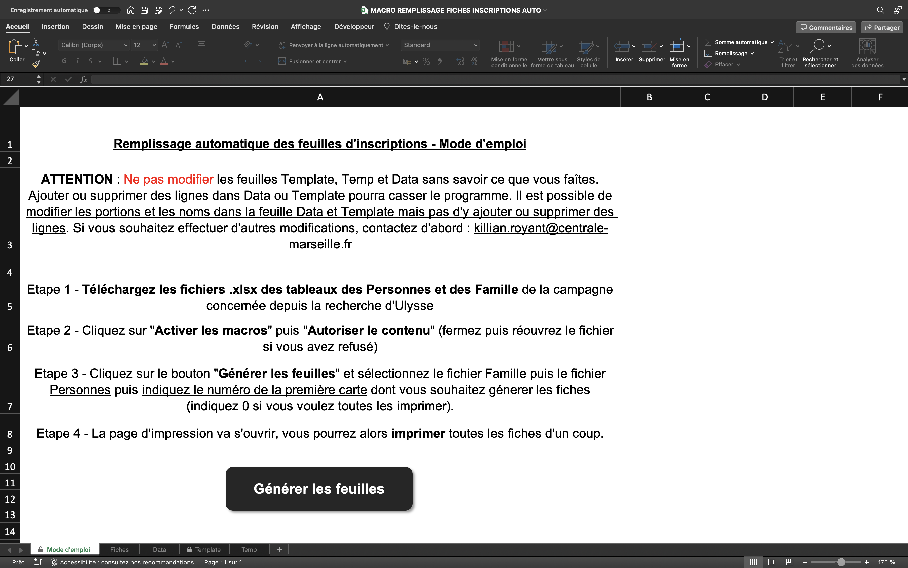
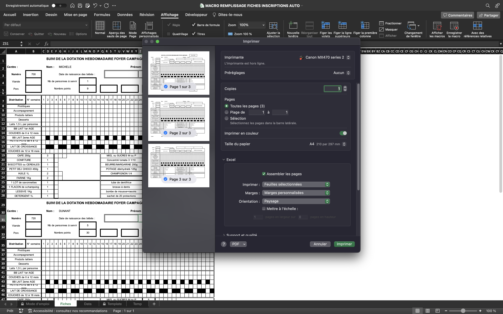

Cœur en Action - Restos du cœur
- projet
- Killian ROYANT
- Louise GACOIN
- Ossama ABDANE
- Sarah HONORÉ
Le projet est réalisé avec le centre des Restos du Cœur de la rue Granoux à Marseille, 4 étudiants du parcours DO-IT. Laetitia Piet encadre ce projet. Ce projet est en collaboration avec le centre des restos du cœur des 4° et 5° arrondissements de Marseille. Notre objectif est d’optimiser et de simplifier certaines tâches des bénévoles du centre.
Nos immersions
Afin de mieux comprendre les bénévoles et leur environnement, nous avons participé à leurs tâches quotidiennes lors de différentes immersions.

Parmi ces immersions, on retrouve :
- Une immersion lors des distributions
- Une immersion lors des inscriptions
- Une immersion lors de la réception des denrées alimentaires
- Des interviews de 3 bénévoles
- Un atelier créatif avec des bénévoles
Nos solutions
Nous avons identifié 3 problèmes et avons proposé des solutions pour chacun d’entre eux.
Problème 1 : Les inscriptions
Avant chaque période de distribution (deux fois par an), une phase d’inscription des bénéficiaires a lieu.
Problème identifié : Il faut remplir manuellement une fiche d’inscription pour chaque famille bénéficiaire. Cela rend le processus long et fastidieux.
Notre solution : numériser la phase d’inscription en automatisant le remplissage de ce document.
Problème 2 : Le calendrier des bénévoles
Chaque semaine, des bénévoles sont présents pour distribuer les denrées alimentaires aux familles bénéficiaires. Actuellement, ces bénévoles viennent sans prévenir quand ils sont disponibles.

Problèmes identifiés :
- Il est difficile de savoir quel bénévole sera présent les jours de distribution.
- Trop de bénévoles sont présents le vendredi
- Il manque des bénévoles le jeudi
Notre solution : créer un calendrier des bénévoles pour faciliter la gestion des bénévoles.
Problème 3 : La répartition des denrées alimentaires
Après chaque livraison de denrées alimentaires, il faut répartir les denrées entre les différentes familles. Actuellement, la responsable de centre fait les calculs à la main.

Problèmes identifiés :
- Les familles qui viennent en début et en fin de distribution n’ont pas la même quantité de nourriture
- Les bénévoles ne font pas confiance aux calculs de la responsable de centre
Notre solution : automatiser le répartition alimentaire en fonction des stocks et de paramètres spécifiques.
Notre poster
Afin de présenter notre projet, nous avons réalisé un poster.

Nos résultats
Nous avons donc essayé de développer et mettre en place nos différentes solutions. On va détailler ci-dessous la démarche et les résultats obtenu.
Problème 1 : Les inscriptions
Avant chaque période de distribution (deux fois par an), une phase d’inscription des bénéficiaires a lieu. Il fallait remplir manuellement une fiche d’inscription pour chaque famille bénéficiaire ce qui rendait le processus long et fastidieux.

Néanmoins, toutes les informations necessaires au remplissage de ces fiches était déjà renseigné sur le logiciel interne des restos du cœur. Nous avons ainsi réfléchis à une solution permettant d’automatiser le remplissage des fiches d’inscription aux campagnes des bénéficiaires.
Pour cela, nous avons travaillé via Excel et une macro codée en VBA. La macro utilise un fichier Excel contenant une feuille de template à remplir, une feuille de mode d'emploi avec un bouton pour lancer la macro, et une feuille Data qui définit les portions à distribuer en fonction du nombre de personnes. La macro demande à l'utilisateur de sélectionner les fichiers Excel des familles et des personnes, et permet de générer automatiquement les fiches d'inscription pour chaque famille bénéficiaire.

Voici le code de la macro développée :
Code de la macro
Code de la macro
Sub GenererFeuilles()
Dim wbFamilles As Workbook, wbPersonnes As Workbook
Dim numCarteMin As Long
Dim wsTemplate As Worksheet, wsTemplateTemp As Worksheet, wsFiches As Worksheet, wsData As Worksheet
Dim i As Integer, famille As Range
Dim familleFile As Variant, personnesFile As Variant
Dim fd As FileDialog
Set fd = Application.FileDialog(msoFileDialogFilePicker)
fd.Title = "Sélectionner le fichier Excel des familles"
fd.Filters.Clear
fd.Filters.Add "Fichiers Excel", "*.xlsx"
fd.AllowMultiSelect = False
If fd.Show = True Then
familleFile = fd.SelectedItems(1)
Else
MsgBox "La sélection de fichier a été annulée. Veuillez sélectionner un fichier Excel à traiter."
Exit Sub
End If
Set fd = Application.FileDialog(msoFileDialogFilePicker)
fd.Title = "Sélectionner le fichier Excel des personnes"
fd.Filters.Clear
fd.Filters.Add "Fichiers Excel", "*.xlsx"
fd.AllowMultiSelect = False
If fd.Show = True Then
personnesFile = fd.SelectedItems(1)
Else
MsgBox "La sélection de fichier a été annulée. Veuillez sélectionner un fichier Excel à traiter."
Exit Sub
End If
' Vérification de la sélection des fichiers Excel
If familleFile = False Or personnesFile = False Then
MsgBox "Veuillez sélectionner les fichiers Excel à traiter."
Exit Sub
End If
Set wbFamilles = Workbooks.Open(familleFile)
Set wbPersonnes = Workbooks.Open(personnesFile)
' Vérification des fichiers Excel
If wbPersonnes.Sheets(1).Range("Q1").Value <> "Contact" Or wbFamilles.Sheets(1).Range("U1").Value <> "Derniere Activite" Then
MsgBox "Veuillez vérifier les fichiers Excel sélectionnés."
Exit Sub
End If
'numCarteMin = 0
numInput = InputBox("Indiquer le numéro de la premire carte à traiter"))
Do While Not IsNumeric(numInput)
numInput = InputBox("Entrez un nombre valide. Indiquer le numéro de la premire carte à traiter : "))
If numInput = "" Then
Exit Sub
End If
Loop
numCarteMin = numInput
Set wsTemplate = ThisWorkbook.Sheets("Template")
Set wsTemplateTemp = ThisWorkbook.Sheets("Temp")
Set wsFiches = ThisWorkbook.Sheets("Fiches")
Set wsData = ThisWorkbook.Sheets("Data")
' Suppression du contenu des feuilles TemplateTemp et Fiches
wsTemplateTemp.Rows("1:" & wsTemplateTemp.Rows.Count).Delete Shift:=xlUp
wsFiches.Rows("1:" & wsFiches.Rows.Count).Delete Shift:=xlUp
wsTemplate.Rows("30:30").Copy
wsFiches.Rows("1:1").PasteSpecial Paste:=xlPasteColumnWidths, Operation:=xlNone, _
SkipBlanks:=False, Transpose:=False
i = 0
For Each famille In wbFamilles.Sheets(1).Range("A2", wbFamilles.Sheets(1).Range("A" & wbFamilles.Sheets(1).Rows.Count).End(xlUp))
If famille.Offset(0, 12).Value >= numCarteMin Then
' Copie du template
wsTemplate.Rows("1:28").Copy
ThisWorkbook.Activate
Sheets("Temp").Select
Rows("1:1").Select
Selection.Insert Shift:=xlDown
Selection.PasteSpecial Paste:=xlPasteColumnWidths, Operation:=xlNone, _
SkipBlanks:=False, Transpose:=False
If famille.Offset(0, 8).Value + famille.Offset(0, 9).Value + famille.Offset(0, 10).Value > 0 Then
BoucleBabies famille, wbPersonnes, wsTemplateTemp
End If
CopieInfos famille, wsTemplateTemp
AjoutPortions famille.Offset(0, 7).Value, wsTemplateTemp, wsData
' Coupe du template rempli
wsTemplateTemp.Rows("1:28").Cut
' Collage à la suite des autres feuilles
wsFiches.Rows(i * 28 + 1 & ":" & i * 28 + 1).Insert Shift:=xlDown
i = i + 1
End If
Next famille
wbFamilles.Close SaveChanges:=False
wbPersonnes.Close SaveChanges:=False
' Ouvrir la fentre d'impression pour imprimer les pages généréess
wsFiches.Activate
Application.Dialogs(xlDialogPrint).Show
End Sub
Sub BoucleBabies(famille As Range, wbPersonnes As Workbook, wsTemplateTemp As Worksheet)
Dim nbBabies As Integer
Dim person As Range
nbBabies = 0
For Each person In wbPersonnes.Sheets(1).Range("A2", wbPersonnes.Sheets(1).Range("A" & wbPersonnes.Sheets(1).Rows.Count).End(xlUp))
If person.Offset(0, 1).Value = famille.Offset(0, 1).Value And person.Offset(0, 9).Value <= 18 Then
If nbBabies = 0 Then
wsTemplateTemp.Range("R3").Value = person.Offset(0, 11).Value
ElseIf nbBabies = 1 Then
wsTemplateTemp.Range("Z3").Value = person.Offset(0, 11).Value
ElseIf nbBabies = 2 Then
wsTemplateTemp.Range("AH3").Value = person.Offset(0, 11).Value
End If
nbBabies = nbBabies + 1
If nbBabies > 2 Then
Exit For
End If
End If
Next person
End Sub
Sub CopieInfos(famille As Range, wsTemplateTemp As Worksheet)
wsTemplateTemp.Range("AD1").Value = famille.Value ' Campagne
wsTemplateTemp.Range("G2").Value = famille.Offset(0, 4).Value ' Nom
wsTemplateTemp.Range("AB2").Value = famille.Offset(0, 5).Value ' Prénom
wsTemplateTemp.Range("B3").Value = famille.Offset(0, 12).Value ' Numéro de carte
wsTemplateTemp.Range("L4").Value = famille.Offset(0, 7).Value ' Nb de personnes à servir
wsTemplateTemp.Range("L5").Value = WorksheetFunction.Max(9, famille.Offset(0, 7).Value * 6) ' Nombre de points
wsTemplateTemp.Range("AF4").Value = "Famille de " & famille.Offset(0, 7).Value & " personnes" ' 'Famille de {nb de personnes} personnes'
End Sub
Sub AjoutPortions(nbPersonnes As Long, wsTemplateTemp As Worksheet, wsData As Worksheet)
Dim product As Range
Dim nbPortions As Long
Dim startCell As Range
Dim i As Long
If nbPersonnes > 6 Then nbPersonnes = 6
For Each product In wsData.Range("A2", wsData.Range("A" & wsData.Rows.Count).End(xlUp))
nbPortions = product.Offset(0, nbPersonnes).Value
Set startCell = wsTemplateTemp.Range(product.Offset(0, 7).Value)
startCell.Value = nbPortions
For i = 1 To nbPortions
startCell.Offset(0, i).Borders.LineStyle = xlContinuous
Next i
Next product
End Sub
La macro importe les fichiers Excel des familles et des personnes, recherche les bénéficiaires, récupère les informations relatives aux dates de naissance des bébés, remplit les fiches d'inscription, ajoute les données relatives aux nombre de portions, copie le template et ouvre la page d'impression pour imprimer les fiches générées.

Cela permet aux bénévoles de gagner du temps et de réduire le risque d'erreurs lors du remplissage des fiches d'inscription. Cette solution a donc permis de résoudre efficacement le problème d'inscription pour les Restos du Cœur.
Avantages
Les bénévoles n'ont plus besoin de remplir manuellement les fiches d'inscription pour chaque famille bénéficiaire, ce qui leur fait gagner un temps considérable. De plus, l'automatisation de ce processus permet de réduire le risque d'erreurs lors du remplissage des fiches d'inscription.
Difficultés rencontrées
Comme on peut le voir dans le code fourni, la solution pour numériser la phase d'inscription a nécessité une expertise technique assez avancée en VBA (Visual Basic for Applications), ainsi que la création d'un fichier Excel contenant une feuille de template à remplir, une feuille de mode d'emploi avec un bouton pour lancer la macro, et une feuille Data qui définit les portions à distribuer en fonction du nombre de personnes.
La création de cette macro a donc été assez complexe et demande une connaissance approfondie du langage VBA. De plus, cette solution n'est pas compatible avec les ordinateurs Mac, car la macro utilise des fonctionnalités spécifiques à Excel pour Windows.
Malgré ces difficultés, la solution mise en place a permis de résoudre efficacement le problème d'inscription et a apporté un gain de temps considérable aux bénévoles, ainsi qu'une réduction du risque d'erreurs lors du remplissage des fiches d'inscription.
Problème 2 : Le calendrier des bénévoles
Au sein de l'association, il était difficile de suivre la présence des bénévoles lors des jours de distribution, faute de planning. C'est alors que nous avons proposé une solution pratique et simple : Framadate. Il s'agit d'un calendrier en ligne, facile à créer et à compléter par tous les bénévoles, quel que soit leur âge. Cette application offre de nombreux avantages :
- Gratuit et open source : Framadate est un logiciel libre et gratuit.
- Facilité d'utilisation : L'interface de Framadate est simple et intuitive.
- Accessibilité : Framadate est accessible depuis n'importe quel navigateur web, sans qu'il soit nécessaire de télécharger ou d'installer un logiciel supplémentaire.
- Inscription non obligatoire : Les utilisateurs peuvent créer et participer à des sondages sans avoir besoin de s'inscrire ou de créer un compte utilisateur.
- Flexibilité : Il est possible de modifier ses réponses à tout instant
- On peut indiquer les disponibilités d'autres bénévoles : ceux qui ne disposent pas de smartphone par exemple.
- Vision sur le long terme : possibilité de générer un fichier mensuellement.
Problèmes rencontrés :
- Beaucoup d'application de planning disponible
- Réticence des bénévoles vis à vis la technologie
Problème 3 : Solution de distribution
Pour aider la responsable de centre à faire sa distribution, nous avions besoin d’un outil simple d'utilisation et quasi incassable.
Voici le résultat:
(mettre imgs)
C’est un classeur Excel composés de 5 feuilles :
- Une feuille pour mettre à jour le nombre de bénéficiaires à servir, en fonction des familles présentes la semaine passées
- Une feuille permettant de mettre à jour le stock
- Deux feuilles de calculs, donnant chacune un répartition différente
- Une feuille permettant de générer les fiches qui sont imprimées chaque semaine et qui guident les bénévoles pour la distribution. Cette feuille fonctionne avec une macro
Les 2 méthodes de calculs:
La première fait une répartition strictement équitable par personne (on divise le nombre d’unité par personne et on donne le même nombre d’aliments pour chaque personne, on a alors beaucoup de restes). La seconde méthode minimise les stocks restants en donnant plus de denrées aux familles les plus nombreuses.
Avantages:
- Document qui suit les étapes logiques d’une semaine de travail au resto du coeur, simplifié au maximum
- L’utilisateur n’a besoin de rentrer que des informations dans les feuilles “data_bénéficiares” et “data_stock”. Tout le reste se remplit automatiquement évitant les répétitions.
- Les cellules contenant les calculs sont uniquement présentes dans les feuilles de répartition et sont verrouillées.
Problèmes rencontrés:
- Le choix d’une méthode de calcul s’est avéré difficile. Aucune des méthodes que nous avons testées n’est parfaite.
- Aussi, il faut conserver un regard critique sur ces calculs car notre Excel ne prend pas en compte les spécificités individuelles de chaque produit. La responsable est libre de modifier les chiffres de la répartition et nous avons constaté qu’elle le fait quasiment systématiquement. On peut penser qu’un bénévole nouveau venu ne pourrait pas effectuer une distribution efficace rien qu’avec notre outil. (Notre outil fonctionne bien pour les bénévoles expérimentés mais reste discutable pour les autres)
- La prise en main peut paraître compliquée car remplir la liste du stock prend du temps. Pour fluidifier cela nous avons effectué 3 répartitions avec la responsable, en l’accompagnant sur l’outil